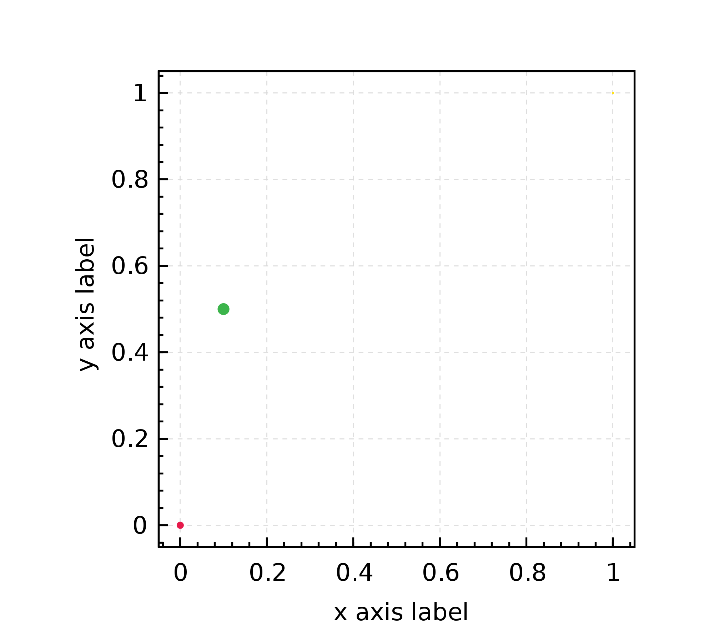
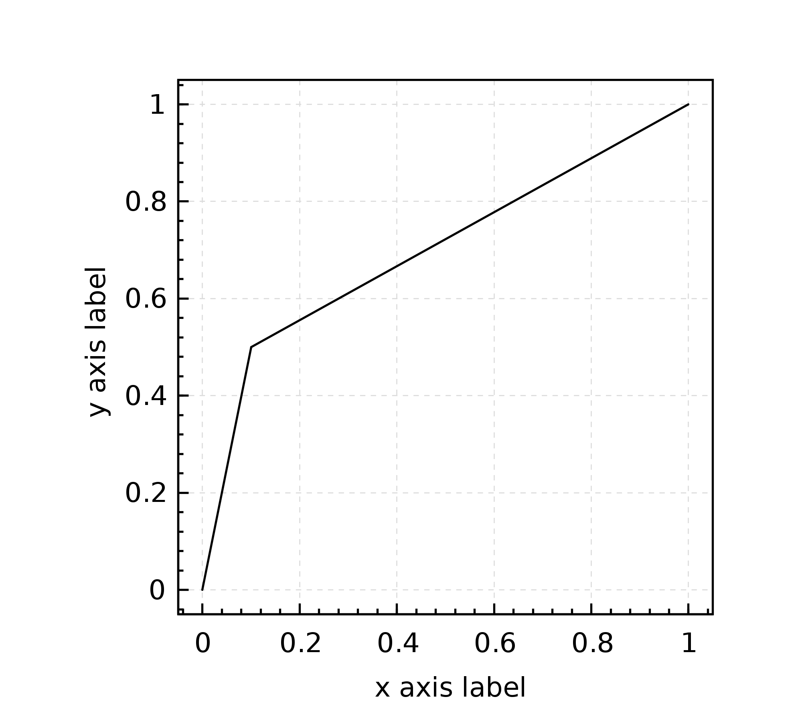
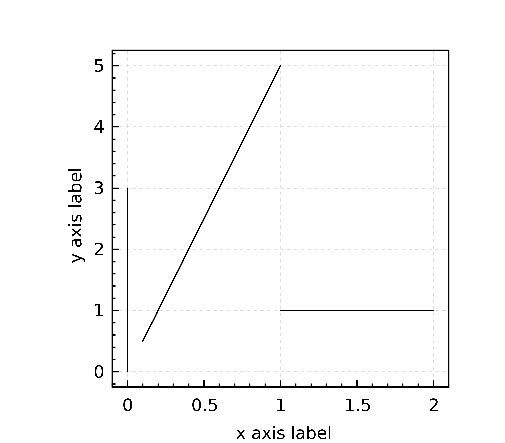

Data renderers #
Data renderers are implementations of the org.nspl.DataRenderer trait.
They create a visual representation from a single data row.
Data renderers provide much of the versatility of nspl, for a full you can consult
the API documentation.
Data renderers may be combined, as explained in the Usage Overview section.
In this section we will use the following data and imports for each code examples:
import org.nspl._
import org.nspl.awtrenderer._
// A list of 4-tuples
val data =
List(
(0d, 0d, 0d, 3d),
(0.1d, 0.5d, 1d, 5d),
(1d, 1d, 2d, 1d),
)
// data: List[(Double, Double, Double, Double)] = List(
// (0.0, 0.0, 0.0, 3.0),
// (0.1, 0.5, 1.0, 5.0),
// (1.0, 1.0, 2.0, 1.0)
// )
point #
Represent each row with a shape placed at the respective coordinate.
Size, color, shape are parametrizable and may be data dependent.
The point() data renderer needs a DataSource with at least 2 columns (x and y coordinate), but it can use further columns as well for the size, color and shape of the visual representation, but it can use further columns as well for the size, color and shape of the visual representation.
It can also append text labels and vertical error bars to the point.
An example with triples where the third column (the third element in the triple) is used for the color channel.
val plot4 = xyplot(data -> point())(
par(xlab="x axis label",
ylab="y axis label")
)
renderToByteArray(plot4.build, width=2000)
The above code block produces this plot: 
line #
Connects consecutive data rows with lines.
import org.nspl._
import org.nspl.awtrenderer._
val plot5 = xyplot(data -> line())(
par(xlab="x axis label",
ylab="y axis label")
)
renderToByteArray(plot5.build, width=2000)
The above code block produces this plot: 
lineSegment #
This renderer needs at least four columns and draws an indepedent (not necessarily consecutive) line segment from each data row.
As there are three rows in the data we defined above this example draws 3 segments:
import org.nspl._
import org.nspl.awtrenderer._
val plot6 = xyplot(data -> lineSegment(color = Color.black))(
par(xlab="x axis label",
ylab="y axis label")
)
renderToByteArray(plot6.build, width=2000)
The above code block produces this plot: 
polynom #
This renderer treats each data row as a polynom which it evaluates numerically at 1000 discrete values over the x-axis. As parameter it takes a secondary data renderer e.g. a point() or a line() to govern the visual representation.
In the below example we take the first two element of our list of 4-tuples. This will draw the numeric values of two 4-degree polynom.
import org.nspl._
import org.nspl.awtrenderer._
val plot7 = xyplot(data.take(2) -> polynom(() => line()))(
par(xlab="x axis label",
ylab="y axis label",
xlim = Some(0d -> 1d),
ylim = Some(0d -> 1d))
)
renderToByteArray(plot7.build, width=2000)
The above code block produces this plot:
bar #
This is the renderer to produce a bar plot. You should not use bar plots.
import org.nspl._
import org.nspl.awtrenderer._
val barPlotData = List(1d -> 10d, 2d -> 11d)
val plot8 = xyplot(
barPlotData -> bar(horizontal=false,
width = 0.5,
fill = Color.gray2)
)(
par(xlab="x axis label",
ylab="y axis label",
xlim = Some(0d -> 3d))
)
renderToByteArray(plot8.build, width=2000)
The above code block produces this plot:
boxwhisker #
This is the renderer to produce a box plot. For a box plot you have to first summarize the data distribution into 5 values: median, 25th and 75th percentiles, minimum and maximum.